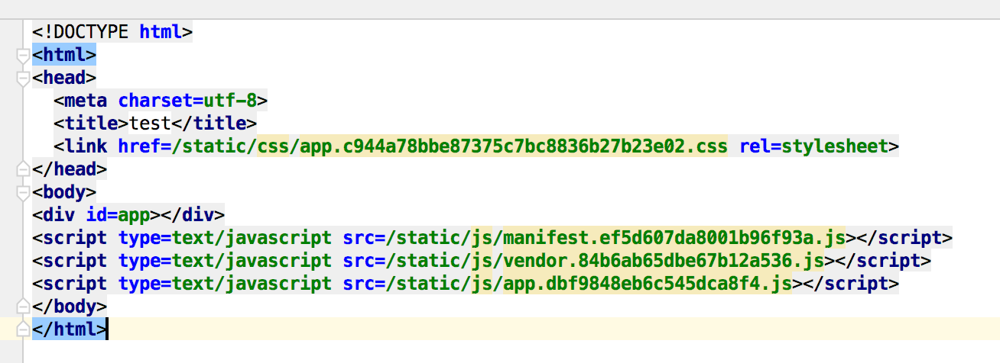
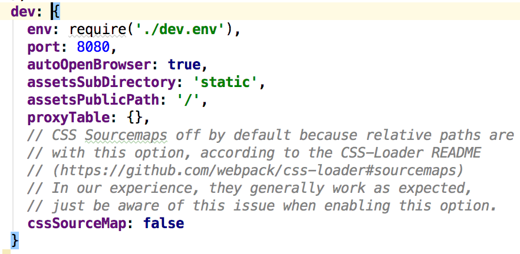
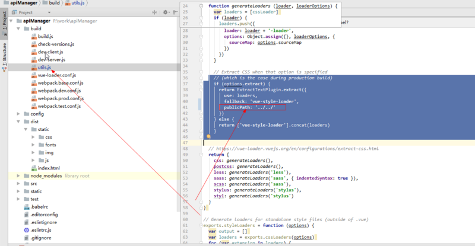

在日常用vue开发的时候，很多时候小伙伴们为了节省时间都使用vue-cli脚手架。然而在使用的时候会遇到一个“坑”，就是在我们完成开发后build后发现打开压缩后的html问题是个空白页面，看着自己辛辛苦苦开发出来的内容打包后不显示是不是很纠结。现在我们来看看是什么原因及怎么解决这个问题。
首先我们先看下打包后页面代码的样子

可以看出来所有的链接地址都是/static，可以改成./static 可以发现有惊喜
那么怎么才能打包后自动变成./static呢
我们来看下vue-cli脚手架webpack的配置
找到config文件夹找index.js
可以看下如图所示

相信小伙伴们都会改了吧？在／前面加个点就可以‘./’
图片不显示的问题
这个问题还是在网上找了很多方法才解决的，开始以为也是地址问题，后来才发现可能是打包后压缩的问题。
找到build文件夹utils.js

看图里添加一下图中代码就行
想要现实可以自行设置一下，就行了。